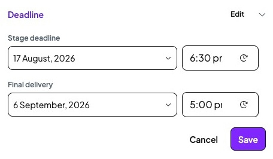
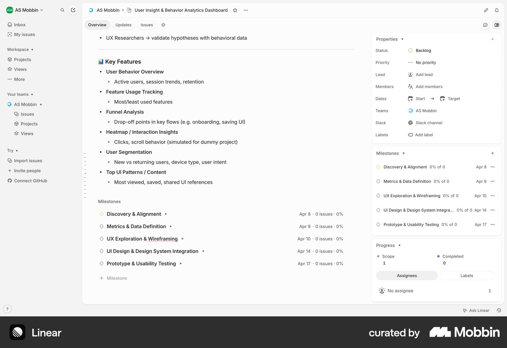
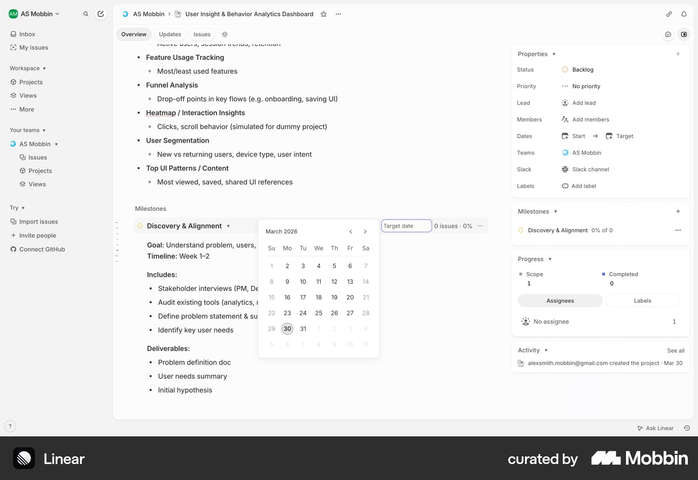
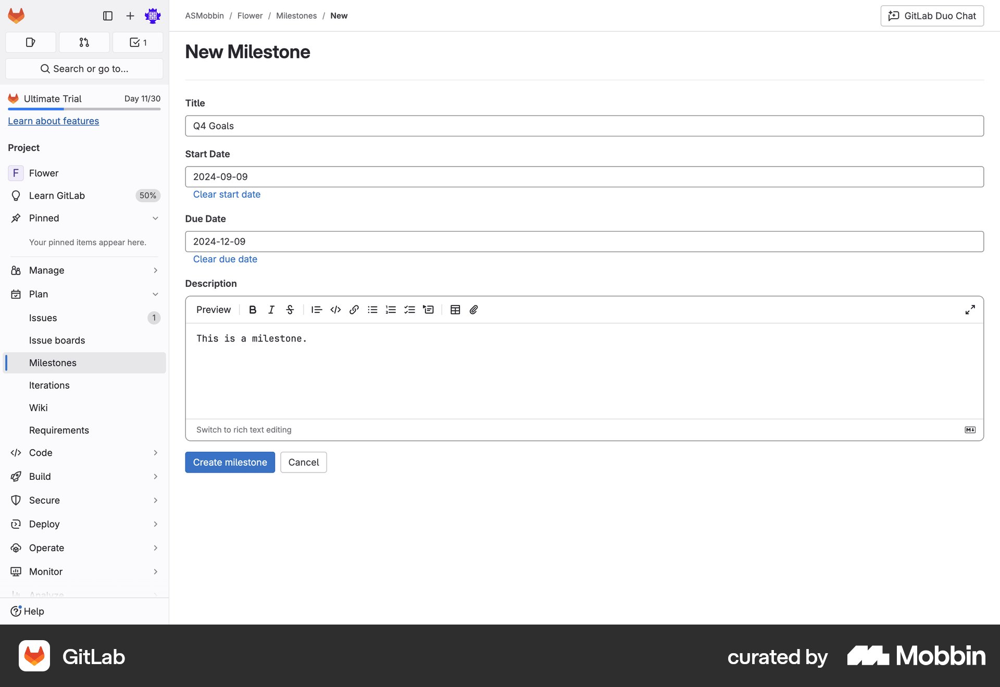
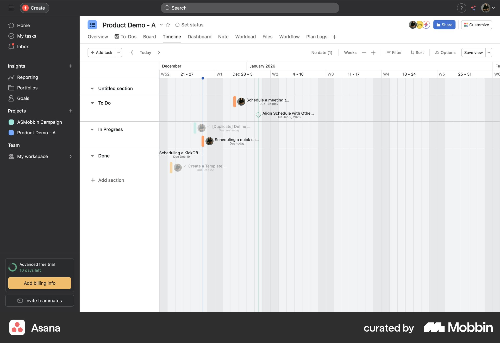

New timing direction from TomTurnaround uses working days excluding weekends, starting when the stage becomes Waiting on Studio. Consider a Studio choice of automatic turnaround timers or fixed dates. No timing implementation is approved in the Team batch; the earlier date-list proposal below is historical and needs reassessment against this requirement. Recorded decisions and remaining scope · Implemented Team result.
Desktop audit · Team proposal remains pendingProposal only · no implementation approved
Deadlines should name the stage
Use a compact list of named stage deadlines, with dates edited beside each stage and Final delivery kept distinct. This makes the project plan visible in one place.
Current problems

Fresh current capture · Studio Staff · Customer Story - APAC Hiring ·1440 x1000. Pixel crop only; full original retained.The stage is hidden. This fixture’s stored date belongs to Media, due17 August2026 at18:30. The panel says only Stage deadline, in both reading and editing states.
It only holds one stage date. Current data has one stage/dueAt pair plus Final delivery. A stage-by-stage plan needs a small front-end model extension, not just renamed copy.
Times are clipped. At both reference widths the time input is78px wide while its content needs88-90px. Read-only Final delivery also omits its stored17:00 time.
The supplied screenshot and fresh captures agree. No date was saved or changed.
Recommended pattern
Keep all included production stages visible as rows. Each row has a stage name and its due date/time, or Set deadline. Clicking that value opens the existing picker in context. Keep a clear Save/Cancel boundary while editing the plan.
Use the project’s actual flow and labels: optional Storyboard where configured, Animation where it replaces Edit, and one Shoot stage. Hidden stage dates remain stored. Media stays pinned outside the sequential flow; its existing deadline must still be shown and preserved separately.
Proposed structure only, not implemented UI| Stage / dated item | Deadline |
|---|
| Brief | Set deadline |
| Script | Set deadline |
| Shoot | Set deadline |
| Edit | Set deadline |
| Masters | Set deadline |
| Media · available throughout | 17 Aug2026 ·18:30 |
Final delivery
Client commitment | 6 Sep2026 ·17:00 |
Illustrative live-action order; actual project configuration drives the rows. Existing Media/final values above come from the inspected fixture. Other stage dates are not fabricated. Masters readiness and Final delivery remain separate meanings.
Four parts of the proposal
DP01: Identify the dated stage
Use a visible stage name, never only Stage deadline. In this fixture, preserve and label the existing Media deadline. Rename the section Deadlines when it contains a plan for multiple items.
Observed defect; proposed label repair. Observed ambiguity: source stage=media,17 August18:30; current read/edit labels both say Stage deadline.
DP02: One row per included production stage
List each stage from the project’s current configured production flow with its date/time or Set deadline. Use the current order and Edit/Animation label, include Storyboard only when configured, and preserve dates for hidden stages.
Product/UI recommendation requiring approval. User requests per-stage scheduling; Linear supports the named-item/date pattern. The current model has one stage/date pair, so this is a front-end model and UI extension, not merely a style fix.
DP03: Edit dates directly and read complete times
Click an existing date or Set deadline in its row to open the existing picker. Keep an explicit Save/Cancel boundary for the plan draft. Show stored dates and times in full; size the controls without shrinking type.
Observed fit issue plus proposed interaction refinement. At1440 and1133, each time text input is78px wide while its scroll width is88-90px. The screenshot clips pm. Read mode also omits the stored final-delivery time.
DP04: Keep final delivery and the Videos summary clear
Keep Final delivery as the separate Client commitment. Show the named next outstanding dated item plus Final delivery in the Videos row; clicking it opens the deadlines list. Preserve meaningful existing Media dates separately from the reorderable flow.
Product/UI recommendation requiring approval. Current production guidance distinguishes stage work and final Client delivery. Current table already has a direct deadline entry, but its model only summarises one stage/date.
Mobbin references inspected
Linear is the closest structural reference: named milestones with dates and a calendar opened at the item. GitLab makes the dated item’s identity explicit. The Asana timeline is a broader scheduling alternative that adds more interface than this focused task needs.
Linear

Open reference on Mobbin. External reference, not Brisk UI.Observed: Named milestones are listed with their target dates beside them; the project overview also exposes them in a side panel.
Supports a named stage/date list that can be scanned without switching a generic stage selector.
Milestones are not Brisk production stages. This does not approve new stage types, stage status rules or date dependencies.
Linear

Open reference on Mobbin. External reference, not Brisk UI.Observed: A calendar is open beside a named milestone’s Target date.
A date can be edited at the named item rather than losing its context.
The screenshot does not establish Brisk save timing. Keep the existing explicit Save/Cancel boundary in this proposal.
GitLab

Open reference on Mobbin. External reference, not Brisk UI.Observed: New Milestone identifies its Title, Start Date and Due Date as separate fields.
Date meaning is tied to an identified item; start and due have distinct meanings.
Brisk does not need start dates or the full milestone creation form for this request.
Asana

Open reference on Mobbin. External reference, not Brisk UI.Observed: A wide timeline places named work items on a calendar grid.
Useful as a broader scheduling comparison.
This takes more space and introduces planning complexity beyond setting the few stage deadlines in the drawer. The compact list is the recommended starting point.
Interaction and behaviour
- Click the deadline summary in Videos to open the list; name the item in the summary, for example Media rather than Stage.
- Click a date or Set deadline to edit that item directly. Keep readable dates/times and stage-specific accessible names.
- Keep Final delivery visible as the distinct Client commitment. Do not merge it with Masters or silently change it when another date moves.
- Allow unset stage dates. Retain completed/hidden-stage history without inventing missing dates.
- Flag suspicious dates after final delivery without automatically rescheduling other work. Parallel work and interview-led stage order must remain possible.
No new date-only storage policy, dependency engine, automatic schedule or backend is proposed. Keep current time semantics and working-day urgency rules.
Current full desktop evidence
Decisions before implementation
Per-stage scope: extend the current front-end model to retain a due timestamp per configured production stage, plus final delivery. Import the current single date only to its identified stage/item; leave the rest unset.
Media preservation: retain the existing labelled Media date separately from the reorderable flow. Do not relabel it Edit or drop it.
Videos summary: recommended next outstanding dated item plus Final delivery, excluding completed/hidden stage dates from the next-action calculation while retaining their data. This affects urgency/filter consumers and needs agreement.
The full multi-stage list is a scope expansion. The smallest standalone repair is to say Media deadline and fix time fit, but that would not fulfil Tom’s request to set each stage’s date.
Authority, limitations and preservation
No exact approved screenshot exists for a multi-stage deadline editor. Use current Brisk DS styling, existing date/time pickers, named production stages and explicit Save/Cancel. The Columns Popover pilot does not authorise replacing these specialised pickers.
Source and guidance
Supporting proposal/reference register · Current labels and time measurements · Mobbin search metadata · Screenshot traceability.
Inspection limits
Fresh origin8776 began with zero local/session keys. Existing Deel editor inspected at1440/1133, cancelled without Save, then read state captured. Temporary viewport restored and inspection tab closed. Working-origin app and the user’s8773 project were not operated.
Other roles, optional/hidden-stage examples and nested picker selection were source reviewed, not browser-retested in this proposal. No screen-reader session or formal accessibility claim. No application code, mock records, permissions, assets or dependencies changed.
Verification after approval
Check both desktop widths and short desktop; every named stage, empty/date/time/edit/cancel/save state; current flow order, optional Storyboard, Animation and hidden-date retention; original Media/final timestamps; Videos summary/filter/urgency and role visibility; calendar/time keyboard behaviour, nested Escape/focus return; no silent date cascade. Type-check, route check and source/data preservation remain required.
Ready for agreement
Recommend the named stage/date list with direct editing, complete date/time display and separate final delivery. This is additional to the pending Team work; no Team or deadline implementation is approved yet.